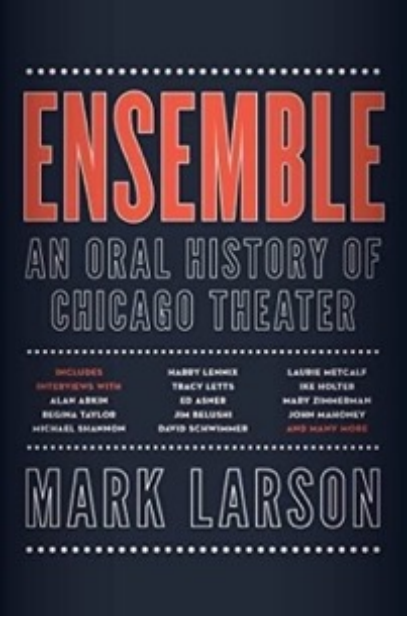
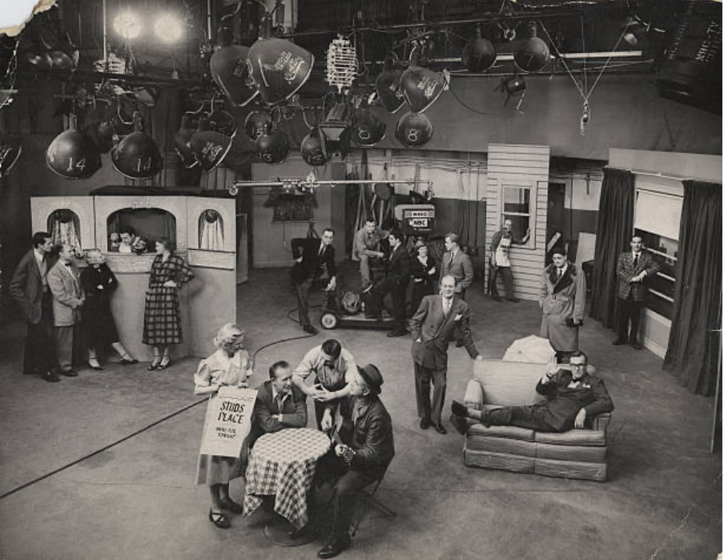
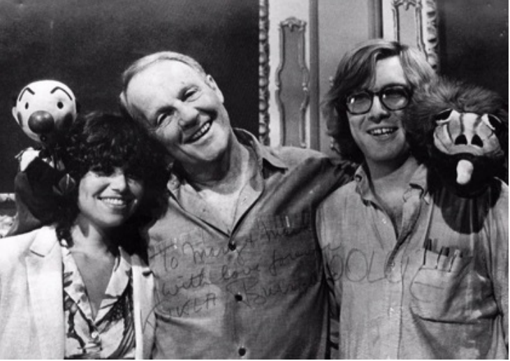
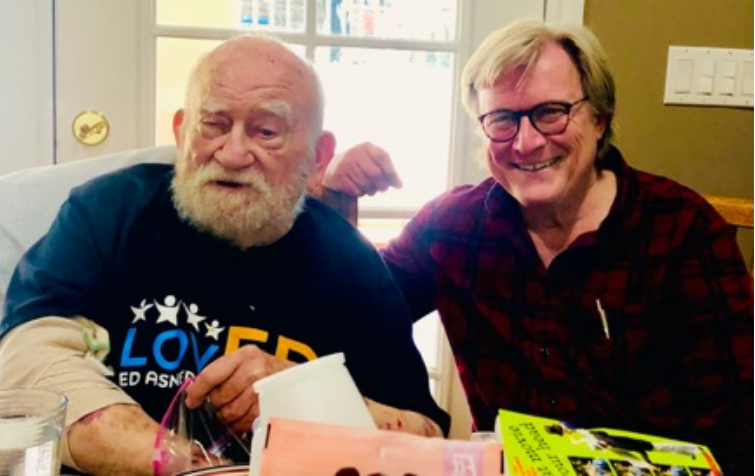

You wouldn’t naturally associate puppeteer Burr Tillstrom of Kula, Fran, and Ollie fame with Studs Terkel, author of such books as Division Street, Working, and Race. But these iconic Chicagoans have both been critical to the career of Mark Larson. Larson, a boyish-looking 70- year-old Chicagoan, has combined his love of theater and passion for education to transform himself into an author influenced by Terkel’s oral history tradition.
|
Mark Larson |
 xxxx |
These days, Larson is in demand to talk about his most recent critically acclaimed book, Ensemble, an Oral History of Chicago Theater. The nearly 700-page conversation is as an intricately woven tapestry of voices about what has made Chicago’s theater community internationally recognized. Larson interviewed nearly 300 founders and original participants of such institutions as Steppenwolf, Goodman, and Congo Square theaters. Ensemble effectively connects Larson’s love of theater with his admiration for Terkel, whose books of oral history detailed the 20th century in America.
Coincidentally, Terkel’s early television show Stud’s Place and Kukla, Fran, and Ollie were both filmed (not taped in those days) in Chicago’s former NBC studios in the Merchandise Mart. Along with Dave Garroway, the first Today Show host, these programs were among those known as the Chicago School of Television. Their links to Larson would turn out to be significant.

A theater “nerd” in high school, Larson knew he wanted a career in theater. “I was in a play in high school…I got that bug.” Larson began college at Valparaiso University but left for Chicago to start a small theater. When that didn’t work out, he took a theoretically temporary job driving for Burr Tillstrom, the brains and brawn behind the popular puppet show Kukla, Fran, and Ollie. “I felt like I didn’t make any impression whatsoever [in the interview],” Larson recalls.
But he got the job; it turned out to be a lot more than driving. “I was called a special assistant. I packed up all the Kuklapolitans [after each show] ……I steamed them out …we had to fix them up. During the show, the Kuklapolitans hung upside down on a hook from a little shelf and he [Tillstrom] dipped his hand into them. Part of my job was to be sure he was using the right one because he’s not looking down.”

Larson had already become intrigued with Terkel. “I discovered Studs Terkel in high school. Division Street. My dad was a journalist, and Studs would occasionally read his columns on the air. I loved to listen to his [Stud’s] shows on WFMT. I was enamored with what he did…he was so cool.” Larson’s father, Roy Larson, later the religion reporter for the Chicago Sun-Times, introduced his son to Terkel at a charity event. “It was a big moment,” Larson recalls.
After seven years caring for Kukla, Ollie, Madam Ooglepuss and the rest of the puppets, Larson sought something new; his wife Mary was pregnant. “I needed a real job! Here I am, 29 years old and hadn’t finished college,” he said. “While I was working for Burr, the Illinois Arts Council hired me to do an artist-in-residence at schools. I really liked working with kids.” He finished college at Loyola with a degree in education and landed a job at Evanston High School.
In the late 1980s, Evanston High School was dealing with challenging student behavior. Larson wrote a letter to the school board calling for changes to address the student unrest. The letter drew support from the faculty and ended up on the cover of the Evanston Review, infuriating the superintendent. His principal called Larson into her office. “She slammed the door behind her and said, ‘you’re making quite a name for yourself…we’re going to meet on Monday, be sure to have the teachers’ representative with you.’ In the midst of this, I got a call from Studs, who had read the letter, and he said ‘I gotta have to have you in this [his book, Race}.’” A very nervous Larson spent over three hours in Terkel’s living room. His interview would appear in the book under a different name, Peter Soderstrom (a common Terkel practice) and later as a character in David Schwimmer’s Lookingglass Theatre production based on the book.
Larson would keep his job but re-evaluated his teaching style. “Seven years later Studs called me again, for his book Hope… Terkel had heard things were going better. They were.” Larson had won the Golden Apple Award for Excellence in Teaching in 1995, which included a sabbatical at Northwestern University. He took advantage of the sabbatical to talk to authors he admired, finding the interview process helped him with his natural shyness. He also joined a team working with the Field Museum to establish a charter school. Although that project did not materialize, Larson met Mary Ellen Munley, Director of Education at the museum. ‘She called me into her office and said, ‘What would you think of working here?’ It had never crossed my mind, but the minute she said that, I thought, I have to do this!”
After splitting his time between the high school and the museum, Larson decided to work full time at the Field, managing partnerships with schools. Four years later, he moved to the Lincoln Park Zoo as Director of Education for the next 3 years. Next, recruited to teach at National Louis University, he pursued his doctorate. He was prompted by a friend, who recognized his interviewing skills, to talk to educational reformers for his doctoral dissertation. “I tended to ask people a lot of questions because it was a way to hide for me,” said Larson. He credits that experience with sparking the idea of writing oral histories. He created a website for those interviews and soon expanded the website to new topics and continued his interviews.
One of his interviews – on starting a new business – was with Doug Seibold, founder and president of Agate publishing, who asked him what he was working on. “I was thinking about retiring from National Louis. And I said to him, ‘some time I’d like to do an oral history of Chicago theater’…I hadn’t thought about this before, but I remember sitting at Chicago Shakespeare Theatre in that beautiful space, and I knew the story that the theater started on the roof top of the Red Lion pub, and I just thought how did they get from that to this? If I could tell that story…what if I did a history of Chicago Shakespeare Theatre? At intermission, I saw a book “History of Chicago Shakespeare,” so it was already done.” Another theater declined his idea, but the idea broadened to include the history of all Chicago Theater. Seibel’s interest spurred him on; Agate’s imprint, Midway would publish the book.
Retiring in his early 60’s, Larson spent the next four years working on Ensemble. Like Terkel, he assembled oral histories but did not copy Terkel’s format of one chapter per person. “I wanted to make it feel like the members of the Chicago theater community were a community, were sitting at table together, so I pieced it together like a puzzle.” Once Ensemble was in production, he began to look for a new topic. Larson felt Ensemble was so sprawling, he wanted a more contained story.

Having met actor Ed Asner working on Ensemble, Larson found his life extraordinary not just as an actor but also as an activist as president of the Screen Actors Guild. He picked Asner as his next book subject and suggested the topic to Doug Seibold. Seibold was not interested in the topic for Agate. “But in the same email,” said Larson, “he suggested ‘What would you think about doing a book inspired by Studs Terkel’s 1974 book Working but for the 21st Century?” Larson readily admits it was Doug’s idea, but he loved it. “it was one of those things where that day I went out and bought a copy of Working so I’d start with a fresh copy…. The book is very much in the same vein [as Terkel’s]. He had 133 interviews in his. Rick Kogan said I should have 133! I don’t know… I have 150, but they won’t all be in it.”
Larson’s first challenge was selecting his subjects. “It’s like Ensemble…I like the phrase ‘you make the path by walking.’ So I started with my first interview…it was a podiatrist in Minneapolis whom had known before and who is Black. He had tried to open a business in a southern state and was pretty much run out of town. It’s a harrowing story – it’s not what I expected. You sort of follow your interest. You let serendipity run its course. It’s mainly people who are just in the workforce… the book opens with a doula… I’ve got Jason Alexander from Seinfeld…the celebrities are intermingled with everyone else because that’s part of the message. Everybody has a job to do. Jason’s work is not any more important than the doula’s.” Larson also talked to a teacher who quit the profession because she couldn’t talk about what she felt was important. He interviewed policemen who felt they were being unfairly blamed for what “bad apples” did to George Floyd. “What I’m trying to do is give a glimpse of what this moment in time is like. When you read Studs’ book, you get a real idea of what 1974 was like through the prism of work. The obvious example is stewardesses. They had to be trained on things like lighting a cigarette. It’s so different now, but it freezes that moment.”
Larson also understood Studs’ broader context of 1974. “1974 was time of extraordinary seismic change…coming off the 60’s… the women’s movement…Watergate… and the push for rights from everybody. We’re certainly going through our own version of that. A lot more is at stake.”
“[My book] is not a political book in my mind. It might have political ramifications… Studs once said ‘I just want to know what it’s like to be you,’ and that’s so elegant. My version of that is ‘I want to know what it’s like to be you doing this job in these times.’ Larson stressed that Terkel did not letting his personal politics into his book, for example, when he interviewed a member of the Ku Klux Klan. “Part of the dilemma and the beauty of this format is I can choose anyone in this room,” said Larson as he looked around the café where we met.
Larson continues to interview for his Working book and at the same time is looking for a publisher for his biography of Ed Asner. From puppeteer to educator to author, Larson has excelled at each stage of his career. A publisher for the Ed Asner book is no doubt just around the next corner.